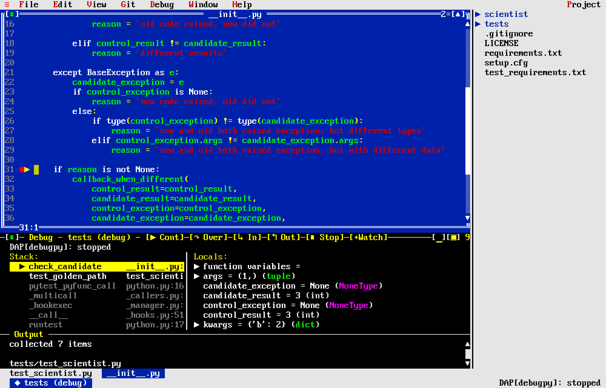
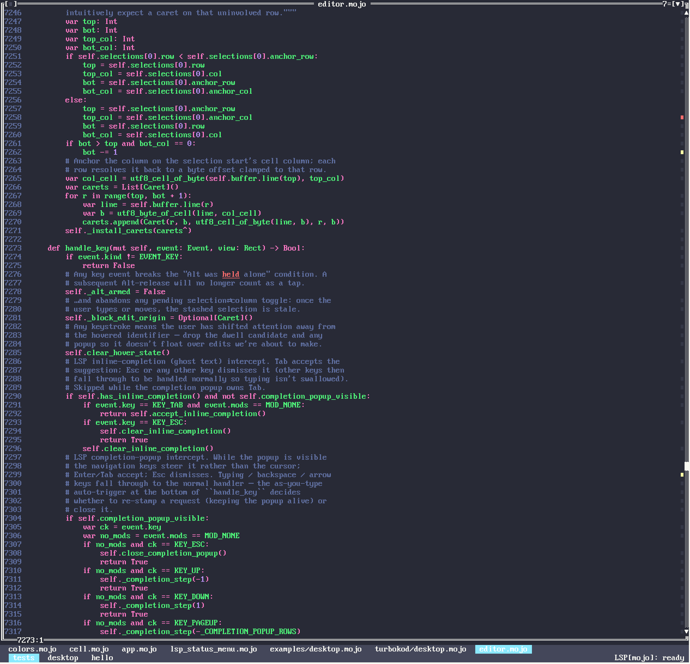
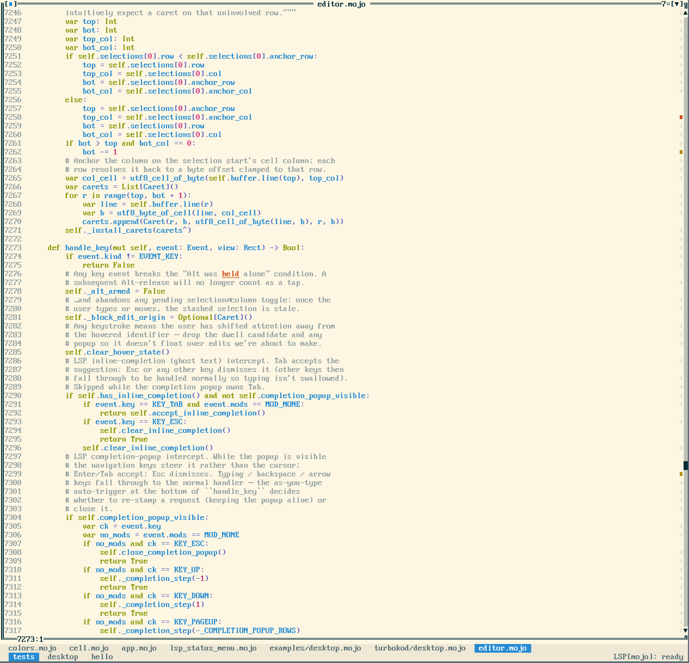

Advertisement · The Programmer's Magazine · Vol. I No. 1

Can a serious IDE
be this much fun to use?
This one can. Introducing Turbokod — a modern, full-featured IDE with the soul of 1992.
The typical modern code editor asks a lot of you. Endless configuration. A marketplace of plug-ins to keep current. A splash screen, a sign-in, an update nag. Somewhere under all of it, there is supposed to be a place to write code.
Turbokod takes a different view. It is a complete development environment, in the unmistakable style of Turbo C++ 3.0 — the blue desktop, the pull-down menus, the status line that tells you exactly which key does what. And it is genuinely modern underneath.
At its heart is a full code editor — with multiple cursors, syntax highlighting driven by TextMate grammars, language servers over LSP, run & debug targets over DAP, spell checking, project-wide find and replace, a file tree, git blame and gutter, a minimap, soft wrap, a tab bar, undo and redo, and editorconfig support.
It runs anywhere you do.
Turbokod runs in any terminal — on your machine or over SSH. And when you want a window of your own, it ships as a native macOS application: the same Mojo core, loaded as a library under a Swift / AppKit host that gives you a real window, the system clipboard, font fallback for emoji and CJK, and a dock icon.
Room to spread out.
Got a second monitor? On the Mac, the tool panels — terminal, debugger, and test runner — can float free into a window of their own, parked on the other screen while your code fills the first. And Turbokod remembers the arrangement per display setup: unplug the external monitor and the panels tuck neatly back into the main window, right where they belong.
Make it yours.
Prefer a different look? A theme is a single palette swap that retints the syntax and the chrome together — from the default Turbo C++ 3.0 blue to Dracula, Solarized, and more — and the whole workspace changes instantly.
All of which is why we think you'll agree: a serious tool needn't be a chore. Turbokod is written in Mojo, it is faithful to a beloved era of programming tools, and it is free and open source under the MIT license. No coupon. No floppies. No 1‑800 number.
A dozen themes — try them in settings live.


Yes! Send me Turbokod.
Suggested retail price: $0.00. It's free and open source — clone it and go.
$ ./run.sh examples/desktop.mojo path/to/project
# …or build the native macOS .app and open a project
$ ./run_swift.sh /path/to/project
Circle 39 on Reader Service Card
Turbokod is a Mojo port of Turbo Vision, based on
magiblot/tvision, and is MIT
licensed. An independent project; all product names are the property of their
respective owners and are used here only as a stylistic homage to a beloved
era of programming tools. © 1992–2026 Turbokod.